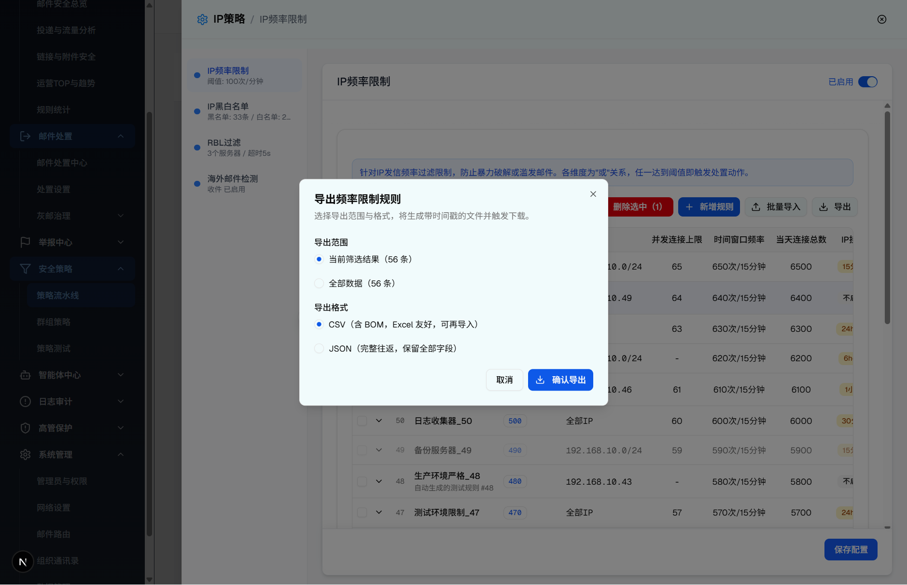

| 所属组件 | 2.3 IP频率限制规则列表模块 |
| 主文件 | index.html |
| 层级编号 | 层级 7 / 8 |
| 触发路径 | 层级0 规则列表 -> 点击「导出」-> 打开导出 Dialog -> 选择范围与格式 -> 确认导出 |
| demo 组件 | ip-frequency-limit-module.tsx（showExportDialog Dialog）+ lib/frequency-rule-io.ts（recordsToCsv/recordsToJson/buildExportFilename/downloadTextFile） |
| 浏览器验证 | agent-browser，2026-07-20，视口 1440×1000 |
弹窗为 Dialog max-w-md。标题「导出频率限制规则」，描述「选择导出范围与格式，将生成带时间戳的文件并触发下载。」含两组 RadioGroup（导出范围、导出格式）共 4 个 radio。

| 序号 | 元素类型 | 文案/标签 | 默认值 | 行为 |
|---|---|---|---|---|
| 1 | RadioGroup（导出范围） | 当前筛选结果（N 条）/ 全部数据（N 条） | filtered（当前筛选） | 决定导出数据源：filteredRules 或 rules |
| 2 | RadioGroupItem | 当前筛选结果（56 条） | 选中 | value=filtered |
| 3 | RadioGroupItem | 全部数据（56 条） | 未选 | value=all |
| 4 | RadioGroup（导出格式） | CSV / JSON | csv | 决定序列化与 MIME/扩展名 |
| 5 | RadioGroupItem | CSV（含 BOM，Excel 友好，可再导入） | 选中 | recordsToCsv，text/csv;charset=utf-8 |
| 6 | RadioGroupItem | JSON（完整往返，保留全部字段） | 未选 | recordsToJson，application/json;charset=utf-8 |
| 7 | Button（取消） | 取消 | - | 关闭弹窗 |
| 8 | Button（确认导出，带 Download 图标） | 确认导出 | - | buildExportFilename 生成带时间戳文件名并触发下载，关闭弹窗 |
| 比对项 | demo 实际 DOM | 规格记录 | 是否一致 |
|---|---|---|---|
| 弹窗定位 | [role="dialog"] 且文本含「导出频率限制规则」 | 同左 | ✅ |
| 范围选项 | 当前筛选结果（56 条）/ 全部数据（56 条） | 同左（实测 56 条） | ✅ |
| 格式选项 | CSV（含 BOM…）/ JSON（完整往返…） | 同左 | ✅ |
| radio 数量 | 4（范围 2 + 格式 2） | 同左 | ✅ |
| 截图校验 | 17-export-dialog.png 可见该弹窗 | 本节引用同一截图 | ✅ |